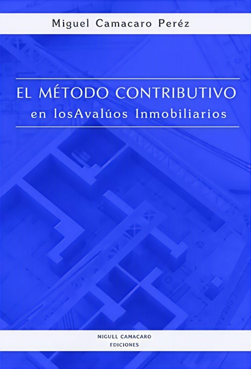

Modelo Mandelblatt-Camacaro/Simulador Monte Carlo
Enfoque probabilístico del Método Contributivo. Transforma el cálculo determinístico en una distribución de frecuencias, con intervalos de confianza y análisis de sensibilidad ceteris paribus.
☕ Aporte / Donación
CAP. 7 - SIMULACIÓN DE ESCENARIOS

PARÁMETROS DEL MODELO
Configure los parámetros a la izquierda y haga clic en "Ejecutar Simulación".
RESULTADOS DE LA SIMULACIÓN
100.000 pruebas
Caso base (determinístico): Vi = 0 UM - Vut = 0 UM/m² — ambos valores deterministas quedan contenidos dentro de los intervalos probabilísticos generados por la simulación.
Valor del Inmueble (Vi)
MEDIA
0
MEDIANA
0
DESV. ESTÁNDAR
0
COEF. VARIACIÓN
0%
MÍNIMO
0
MÁXIMO
0
Intervalo de confianza al 80%
Rango de valores donde se espera, con el nivel de certeza elegido, que se ubique el valor del inmueble.
| Mínimo | Media | Máximo | C.V. |
|---|---|---|---|
| 0 | 0 | 0 | 0% |
Análisis de sensibilidad — Tornado
A. Rango declarado de cada variable
Variación porcentual de Vi cuando cada variable recorre, por sí sola, el 80% central de su propia distribución (del percentil inferior al superior), con las demás en su valor más probable. Este gráfico cambia al modificar mínimos, máximos, valor más probable o tipo de distribución. Una variable con distribución Fija no produce barra.
B. Contribución a la varianza
Peso de cada variable en la dispersión del resultado, calculado con la correlación de rangos (Spearman) entre cada entrada y Vi sobre todas las pruebas simuladas. Los porcentajes suman 100% en valor absoluto; el signo indica si al subir la variable sube (+) o baja (−) el valor del inmueble.
C. Ceteris paribus ±10%
Efecto sobre Vi de mover cada variable un 10% por debajo y un 10% por encima de su valor más probable, manteniendo las demás constantes. Es una medida de elasticidad local: depende únicamente de los valores más probables, no de los rangos ni de las distribuciones.
Estadísticas — valores de previsión
| Pruebas | 100.000 |
| Caso base | 0 |
| Media | 0 |
| Mediana | 0 |
| Desviación estándar | 0 |
| Varianza | 0 |
| Sesgo | 0 |
| Curtosis | 0 |
| Coeficiente de variación | 0% |
| Mínimo | 0 |
| Máximo | 0 |
| Ancho de rango | 0 |